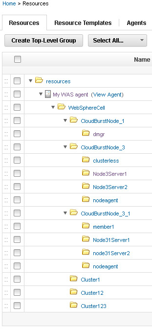

Use the WebSphere® Application Server - Deploy
plug-in to import information about an IBM® WebSphere Application Server system
into a collection of resources. Typically, importing information by using the plug-in takes less
time than manually creating resources to match the IBM WebSphere Application Server.
Before you begin
- Install the WebSphere Application Server -
Deploy plug-in. To download plug-ins, see the Deploy plug-ins. Use the most recent version of the plug-in.
- Create a top-level resource group to contain agents. See Creating groups.
- Install an agent on the WebSphere Application Server system and
add the agent as an agent resource under the top-level resource group.
About this task
Plug-ins can be developed and updated more frequently than IBM DevOps Deploy (Deploy)
provides release cycles. For the latest version of the WebSphere Application Server -
Deploy plug-in and the latest documentation, see the Deploy plug-ins.
Procedure
-
On the Deploy server,
click Resources to view the Resource Tree page.
-
If the wsadmin file is in a different location than one of the default
locations, specify the file location as the value of the wsadmin.path property
on the agent resource.
The default location of the wsadmin file on Linux™ is
/opt/IBM/WebSphere/AppServer/bin/wsadmin.sh. The default locations on Microsoft™ Windows™ are
C:\IBM\WebSphere\AppServer\bin\wsadmin.bat and C:\Program
Files\IBM\WebSphere\AppServer\bin\wsadmin.bat.
-
Click the Actions push button that is associated with the top-level
group, and then click Add Agent.
-
In the Create Resource window, select the agent and then click
Save.
The new agent resource is displayed in the resource tree. Eventually, another resource
is displayed under the agent resource. This resource is named WebSphereCell and
represents the WebSphere Application Server cell. You
might need to click Refresh to see the cell resource, and it can take several
minutes for the cell resource to be displayed.
-
Click the WebSphere Application Server cell
resource and then click .
The cell resource has the WebSphereCell role, which includes several
properties that are related to the cell.
-
In the section that is labeled Role Properties for the
WebSphereCell role, specify the connection information for the cell, including the
locations of the profile and wsadmin file and the user name and password for
the WebSphere Application Server system, as in the following figure:
-
Click Save.
-
On the Resources page, click the Actions push
button that is associated with the cell resource, and then click Configure using
WebSphere Topology Discovery.
The discovery step runs. This step might take several minutes. A log is displayed to
show progress.
-
When the discovery process completes, close the log window, and then refresh the resource
tree.
Results
Resources that represent the WebSphere Application Server components
are displayed in the resource tree. These new resources are displayed under the agent resource that
you used to import the WebSphere Application Server
components. Each node, cluster, and server has a matching resource. The following figure shows
resources that represent a WebSphere Application Server system
with three nodes:

What to do next
Add these resources to an environment by opening the Resources page
for the environment and then clicking Add Base Resources.